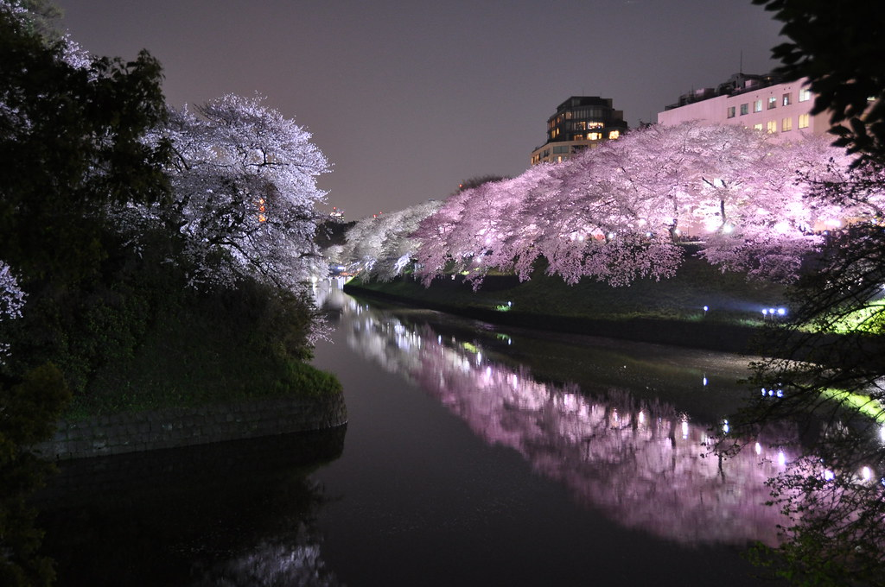

Yashin hails from the Land of Kanzai. Kanzai is a land of purity. It is said that darkness may never penetrate this land. The lush plains of the land bring forth much wildlife and, with it, appreciation by those who nurture and feed off its blessing. The already beautiful realm is adorned with Sakura blossom trees and numerous waterfalls glistening under the ever-present sunlight. His people reside in the center of Kanzai, amidst the many Sakura trees. Kanzai is special as it is said to be where the truest of warriors are born. Only those who possess both a pure heart and a warrior’s spirit are said to earn the right to be born in this land.
